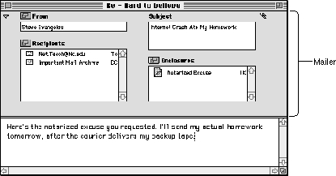
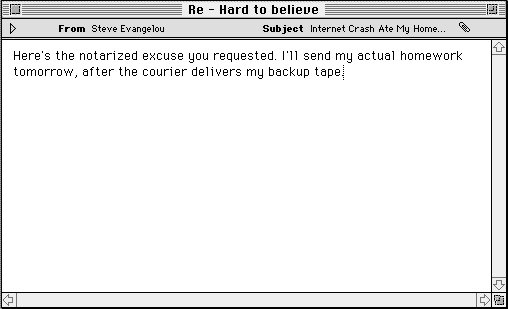
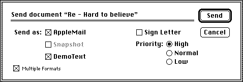

PowerTalk Mailers
The Standard Mail Package provides a sophisticated electronic-mail interface that includes a new region--known as a mailer--that can be added to any window. MacApp's PowerTalk support allows a user to add a mailer to any document. A document with an attached mailer is called a letter. Figure 7-5 shows a letter with an expanded mailer, while Figure 7-6 shows the same letter with its mailer in the contracted state.In addition to adding or deleting a mailer, a user can send a document as electronic mail and open, reply to, or forward a letter. Each of these operations is specified by a command from a new menu, the Mail menu.
Figure 7-5 Document with expanded mailer

Figure 7-6 Document with contracted mailer

MacApp encapsulates much of its PowerTalk support in two mixin classes,
MMailingandMMailable. TheTMailingApplicationclass mixes inMMailing, and theTMailableDocumentclass mixes inMMailable. The next section supplies more information about these and other classes MacApp uses to support PowerTalk mailers.The Standard Mail Package is a component of the PowerTalk system software, which adds extensions to the desktop services offered in System 7 and later versions of the Macintosh Operating System. The technology underlying the PowerTalk software is called the Apple Open Collaboration Environment (AOCE). For detailed information about PowerTalk, the Standard Mail Package, and mailers, see Inside Macintosh: AOCE Application Interfaces.
MacApp's PowerTalk Mailer Support Classes
MacApp implements its mailer support through the following classes. Many of the classes listed here have fields that refer to instances of other listed classes. The sections that follow describe how these classes work together.You can read more about the classes described here in the MacApp Class and Method Reference.
TMailingApplication,MMailingTheTMailingApplicationclass is a subclass ofTApplicationthat mixes in theMMailingclass and defers to it for most of the mailing operations it performs. Together, these classes handle the Open Next Letter command from the Mail menu, authenticate the mail user, and give the Standard Mail Package a chance to handle Toolbox events when there is no mailer view in the target chain.TMailableDocument,MMailableis subclass of
TMailableDocumentTFileBasedDocumentthat mixes in theMMailableclass and defers to it for most of the operations it performs. TheMMailableclass has a reference to its letter and defers to it for some operations. Working together, theTMailableDocument,MMailable, andTLetterclasses support adding content to a mailer, reading content from a mailer, and setting up and responding to choices from the Mail menu. They also provide certain scripting support for mailers.TLetter- The
TLetterclass represents a letter that encloses a document to turn it into electronic mail. It contains methods to handle most Mail menu commands, as well as to insert data into a mailer and read data from a mailer. It calls on its document to perform some operations and leaves other operations to be implemented by subclasses. TheTLetterclass has a reference to its mailable document.TFileBasedLetter- This subclass of
TLetterimplements methods for reading, writing, and saving mail content for a file-based document. TheTFileBasedLetterclass has a reference to a file-based document.TMailerView- The
TMailerViewclass provides a view to display a standard mailer for a document. It expands and contracts the mailer and handles mouse and key events for the mailer. It does much of its work by calling on the Standard Mail Package. TheTMailerViewclass has a reference to its letter.TMailer- The
TMailerclass represents the PowerTalk mailer attached to a document. It mixes in theMScriptableObjectclass and works with it to provide scripting capabilities, such as getting and setting object properties and accessing contained objects. It can set properties such as the mailer's name and content. A letter may have multiple mailers, such as when being forwarded. TheTMailerclass has a reference to its document, letter, and window.TLetterTabber- The
TLetterTabberclass lets a user tab between the mailer view and the main content view of a document with an attached mailer.CDSSpec,CCatalogsand
CDSSpecCCatalogsare convenience classes for working with AOCE catalog services. TheCDSSpecclass represents an AOCEDSSpecstructure and can get and setDSSpecinformation. TheCCatalogsclass represents the top level of the catalog system. It can enumerate the available top level catalogs, such as the AppleTalk and PowerShare catalogs, but not the contents of a catalog.Including MacApp's PowerTalk Support in Your Application
To take advantage of MacApp's PowerTalk support, your applicationChapter 29, "Working With PowerTalk Mailers," provides a detailed road map for adding PowerTalk support to your application.
- includes the Mail menu in its resource definition file
- initializes MacApp's mailer support by calling
InitUMailer- uses an application class that descends from
TMailingApplication- uses a document class that descends from
TMailableDocument- overrides various methods to provide its own specific mailer content
Not all applications need electronic mail, so MacApp's PowerTalk support is conditionally compiled--the mailer code isn't included unless you specifically ask for it. For example, if you build your application with MPW and the MABuild tool, you include MacApp's PowerTalk support with a build line similar to the following:
MABuild YourAppName [-options] -PowerTalkThe MABuild tool is described in Appendix A. If you need to build both a version of your application with PowerTalk support and a version without it, you can use the same flags MacApp does to conditionally compile PowerTalk-specific code:#if qPowerTalk // Your code here. #endif // qPowerTalkCode between the#ifand#endifcompiler directives will not be part of your application unlessqPowerTalkis defined asTRUEwhen the code is compiled. When you build with the -PowerTalk option,qPowerTalkis automatically set toTRUE. You can specify-noPowerTalkto build the application without PowerTalk support.If your application uses MacApp's mailer support, it must call
InitUMailerfrom itsmainroutine, using code similar to the following:#if qPowerTalk if (HasAOCEToolBox) InitUMailer(); #endifEven if your application is built to include MacApp's PowerTalk support, the application may be running on a machine that does not have access to the AOCE software that PowerTalk support requires. MacApp'sHasAOCEToolBoxroutine determines whether the necessary system software is available:
- If the application is built to include MacApp's PowerTalk support, HasAOCEToolBox calls the Toolbox
Gestaltroutine to check for the presence of the AOCE software. If it is present, HasAOCEToolBox sets its return value toTRUE; otherwise, it sets it toFALSE.- For a Power Macintosh application, HasAOCEToolBox determines whether the Standard Mail Package shared library is present; if it is not present, HasAOCEToolBox sets its return value to
FALSE.- It returns the specified value.
- IMPORTANT
- You should be careful to isolate any code that deals with mailers, using conditional compilation (#if qPowerTalk) or conditional testing (if (HasAOCEToolBox)). Otherwise, your application may try to call MacApp code or reference a MacApp variable that was not included in the current build, with unpleasant results.

The Mail Menu
MacApp'sDefaults.rfile defines a'CMNU'resource for the Mail menu used with PowerTalk mailers. For information on adding this menu to your application, see "Include the Mail Menu in Your Application," beginning on page 625.The Mail menu contains these commands:
Figure 7-7 The Send dialog box from the DemoText sample application
- Add Mailer/Delete Mailer. The Add Mailer/Delete Mailer command is enabled if the current document supports mailers. The text is Add Mailer if the current document doesn't have a mailer installed, and Delete Mailer if it does. As the names indicate, this menu command adds a mailer to or deletes a mailer from the current document.
- Send. The Send command is enabled if the current document has a mailer installed or if the current document is a received letter to which a forwarding mailer has been attached. The Send command causes the document's data to be packaged into a letter and sent to the specified recipients. If the user attempts to send mail without specifying a subject or a recipient, an error is reported.
The Send menu command presents a dialog box that allows the user to choose which data formats should be included (standard, snapshot, or native to the application), whether the letter should be signed, and what priority the letter should receive (high, normal, or low). Formats are described in "Mail Formats" on page 198. Figure 7-7 shows the Send dialog box from the DemoText sample application.
- Reply. The Reply command is enabled when the current document is a received letter. The Reply command opens a new document, with a mailer whose From field is set to the current user's name, Subject field is set based on the subject of the received letter, and Recipients field is set to the sender of the received letter. After choosing Reply, the Send menu command is enabled to send the reply.
- Forward. The Forward command is enabled when the current document is a received letter. The Forward command superimposes a new mailer on the current mailer, setting the From and Subject fields based on the current mailer. A user can view other mailers in a document by clicking a dog-ear in the lower-left corner of the mailer. After adding a new mailer for forwarding, the Send menu is enabled to send the forwarded letter.
- Open Next Letter. The Open Next Letter command is always enabled. It opens the next unread letter in the current active In Tray. The user is informed if there is no unread letter.

Mail Formats
When you use a mailer to send a document as a letter, you can send the document in a native format (that is, any of the internal document formats supported by your application), in snapshot format (an image or "snapshot" of the document), in a special format called standard interchange format, or in any combination of these formats simultaneously. Standard interchange format is a set of data formats that consists of plain text, styled text, sound (AIFF), images ('PICT'), and QuickTime movies ('MooV').The DemoText sample application provides an example of how to send letters containing both native and standard interchange format (see "Override Methods to Get and Set Mailer Data," beginning on page 630). For an example of an image-drawing routine, see the "Standard Mail Package" chapter of Inside Macintosh: AOCE Application Interfaces.
Supplying Mail Content
If your application supports PowerTalk mailers, you must supply code to add content to the mailer. When a user sends or receives a letter in your application, MacApp calls methods of various classes to insert data into a letter or extract data from a letter. Depending on which letter formats you support, you may need to override certain of the following methods:You can read more about these methods in the MacApp Class and Method Reference. MacApp's DemoText sample application provides examples of how to override many of the methods described in this section.
- AddNativeMailContent. The
AddNativeMailContentmethod adds a document's data to a mailer's content in the document's native format.AddNativeMailContentis defined in theTLetter,TFileBasedLetter, andMMailableclasses. InMMailable, it calls theAddNativeMailContentmethod of its letter. InTLetter, it does nothing. InTFileBasedLetter,AddNativeMailContentsupplies the document's data in native format by calling on the document's filehandler to create a copy of the file. You don't normally need to override this method.- AddStandardMailContent. The
AddStandardMailContentmethod adds a document's data to a mailer's content in a standard mailer format. The predefined standard types are text, picture, sound, styled text, and movie.AddStandardMailContentis defined in theTLetterandMMailableclasses. InTLetterit does nothing. InMMailable, it calls theAddStandardMailContentmethod of its letter. You normally override this method in your document class to write your content in a standard format.- AddSnapshotMailContent. The
AddSnapshotMailContentmethod adds an image of a document's data to a mailer's content.AddSnapshotMailContentis defined in theTLetterandMMailableclasses. InMMailable, it calls theAddSnapshotMailContentmethod of its letter. InTLetter, it calls the Standard Mail Package routineSMPImage. It suppliesSMPImagewith a callback routine that gets the letter's document and calls the document'sImageDocumentForLettermethod. You don't normally overrideAddSnapshotMailContent--you overrideImageDocumentForLetterin your document class.- ImageDocumentForLetter. The
ImageDocumentForLettermethod provides a snapshot image of a document's content. It is defined in theMMailableclass but does nothing in that class. You override it in your document class to provide an image of your document's content. Imaging a document for a letter may be very similar to printing the document.- ReadNativeMailContent. The
ReadNativeMailContentmethod reads data from a mailer in one of your application's native formats and inserts it into your document.ReadNativeMailContentis defined in theTLetter,TFileBasedLetter, andMMailableclasses. InMMailable, it calls theReadNativeMailContentmethod of its letter. InTLetter, it does nothing, and is intended to be overridden in subclasses (such asTFileBasedLetter). InTFileBasedLetter, it calls theReadFilemethod of the file handler to read the document's data.- ReadStandardMailContent. The
ReadStandardMailContentmethod reads data from a mailer in a standard mail format and inserts it into your document. The predefined standard types are text, picture, sound, styled text, and movie.ReadStandardMailContentis defined in theMMailableclass, but it does nothing there. You override this method in your document class.- SetReplyContents. The
SetReplyContentsmethod sets up a reply document with contents based on the original received letter.SetReplyContentsis defined in theMMailableclass, but it does nothing there. You override this method in your document class to add contents for the reply document. Your version of theSetReplyContentsmethod can customize the reply for content, style, layout, or any other desired feature.Displaying a Mailer View
When you add a mailer to a document, MacApp attempts to position a mailer view automatically. It calls the document'sMakeRoomForMailermethod to make room for the new mailer view. TheMakeRoomForMailermethod is defined in theTLetterandMMailableclasses (MMailableis mixed in withTMailableDocument). InTLetter, it calls theMakeRoomForMailermethod of its document. InMMailable,MakeRoomForMaileradjusts the document's window based on the assumption that the main content view is a scroller with ID'SCLR'. If your view hierarchy cannot conveniently be made to match this format, you must overrideMakeRoomForMailerto adjust your views.
- Note
- A mailer view delegates targeting responsibility to the Standard Mail Package in its
DoMailerEventmethod. (MacApp's target chain is described in detail in Chapter 5, "Events and Commands.")
File Types for Letters
MacApp defines a default file type for the letters your application creates:const DescType typeLetterDesc = 'lttr'; const DescType kStandardLetterFileType = typeLetterDesc;TheMMailingclass has a field,fMainLetterFileType, that stores the principal file type your application uses for letters. The field is set tokStandardLetterTypein the constructor forTMailingApplication. This is the type recognized by applications that handle mail in a standard way. For example, AppleMail also uses the'lttr'file type, but combines it with the'lap2'creator type. You can specify a different file type for your application's letters by passing the type to theIMailingApplicationmethod.By default, a letter file has the same Finder icon as the document it is added to, because MacApp does not supply special icons or bundle information for the letter file type. You can specify new icons for your letters by adding icon and bundle information to your application's resource definition file. For example, you might wish to create a joint icon that combines the AppleMail icon and your application's icon. See the "Finder Interface" chapter of Inside Macintosh: Macintosh Toolbox Essentials for more information about application icons and bundle information.
Digital Signatures
When a user changes a document with an attached mailer, theChangedmethod of theTMailableDocumentclass calls theLetterContentChangedmethod, which in turn calls theLetterContentChangedmethod of the document's letter. In theTLetterclass,LetterContentChangedcalls the Standard Mail Package routineSMPContentChanged, which notifies the Digital Signature Manager that the content of the letter has changed (which will invalidate the signature).So while MacApp makes no direct calls to the Digital Signature Manager, it does call the
SMPContentChangedroutine at the appropriate time. If you implement a subclass ofTMailableDocumentthat overrides theChangedmethod, your version should either callInherited, or callLetterContentChangeddirectly, to make sure the signature is invalidated if necessary.
- Note
- The implementation of more sophisticated digital signature support is left as an exercise for developers who need it.